China Employee Termination in 2026: Pulse Control-Tower Handoff Brief for Foreign Employers
Key takeaways
- In China termination cases, many failures come from weak handoffs between legal, HR, payroll, and managers—not from a single policy mistake.
- A control-tower handoff model gives foreign employers clearer ownership, faster escalation, and fewer late-stage reversals.
- The highest-risk handoff is legal route approval to payroll lock, followed by payroll lock to manager communication.
- Handoff SLAs should be explicit: overdue handoffs are risk signals, not admin delays.
- This Pulse brief leads with practical operations; legal depth is secondary in the appendix.
What changed and why this matters now
Cross-functional teams frequently assume that a completed task means the next team received what they need. In practice, handoff quality is often weak: missing assumptions, outdated versions, unclear ownership, and late escalations. That is how otherwise manageable cases become expensive.
This run rotates to a control-tower handoff format. Rather than focusing on signal severity or case archetypes, it focuses on transfer integrity between teams. For foreign employers working across geographies, this is where execution risk usually concentrates.
Plain-language legal context first
China termination execution must remain consistent across legal basis, evidence record, payout treatment, and communication language. If any handoff breaks that consistency, dispute and rework risk increase.
National legal principles set a baseline, but practical outcomes can vary by city-level handling norms. For this reason, locality-sensitive assumptions should travel with the handoff package—not remain in one team’s notes.
Control tower: four critical handoff checkpoints
Checkpoint 1 — Legal -> HR handoff
Required transfer: approved route memo, contradiction log status, local interpretation note, route-switch triggers.
Common failure: route approved, but unresolved assumptions not flagged.
SLA suggestion: handoff package complete within 24 hours of route approval.
Recovery action: if incomplete, pause execution track and issue route clarification ticket.
Checkpoint 2 — HR -> Payroll handoff
Required transfer: finalized case facts, payout components, timeline constraints, required approvals.
Common failure: payroll receives shifting facts and produces multiple worksheet versions.
SLA suggestion: single fact baseline confirmed before worksheet drafting.
Recovery action: appoint single data owner; invalidate conflicting worksheet drafts.
Checkpoint 3 — Payroll -> Manager communication handoff
Required transfer: vFinal worksheet, IIT assumptions memo, approved script pack, escalation wording.
Common failure: manager receives script before payroll lock.
SLA suggestion: no communication prep until payout lock and script lock are both complete.
Recovery action: block meeting scheduling and re-brief manager on current approved narrative.
Checkpoint 4 — Execution -> Closure handoff
Required transfer: payment proof, acknowledgment records, final memo, archive index, retrieval-test plan.
Common failure: case marked closed without defensible retrieval readiness.
SLA suggestion: closure evidence package finalized within two business days of payment.
Recovery action: reopen closure workflow until retrieval criteria pass.
Why this handoff model helps foreign clients
Foreign employers often coordinate through asynchronous communication. Without structured handoffs, context is lost and assumptions diverge. A control tower provides one source of truth for what was transferred, when, by whom, and with what caveats.
It also improves executive oversight. Leadership can monitor handoff breach rates and intervene before cases enter high-cost failure zones.
Practical scenarios
Scenario A: legal sign-off, payroll confusion
Legal marks route approved, but payroll receives inconsistent case fact files.
Handoff diagnosis: Checkpoint 2 breach.
Action: freeze worksheet edits, confirm master fact baseline, rerun payroll lock.
Scenario B: manager call scheduled too early
Manager prep starts before payout assumptions are finalized.
Handoff diagnosis: Checkpoint 3 breach.
Action: cancel prep, complete payroll lock, issue new script pack.
Scenario C: post-case file retrieval fails
Six weeks later, internal review cannot reconstruct final assumptions.
Handoff diagnosis: Checkpoint 4 breach.
Action: execute closure remediation and enforce retrieval-test standard.
Daily operations SOP (role ownership)
Control tower owner (HR ops or PMO): tracks checkpoint status, SLA timers, and breach incidents across active cases.
Legal owner: certifies route package completeness and locality notes before Checkpoint 1 release.
HR owner: validates fact baseline and approval chain before Checkpoint 2.
Payroll owner: certifies worksheet lock and tax assumptions before Checkpoint 3.
Manager owner: uses approved script only and logs escalation incidents.
Closure owner: completes archive package and retrieval test before final sign-off.
Document checklist with SLA markers
- Route package (T+24h from route approval)
- Fact baseline package (before payroll drafting)
- Payroll lock package + script lock (before communication)
- Closure package + retrieval test (T+2 business days post-payment)
Exception handling playbook
- SLA breach at any checkpoint: escalate to control tower owner and apply temporary stop on downstream tasks.
- Conflicting version detected: invalidate non-master versions and issue corrected transfer packet.
- Unresolved local interpretation risk: block handoff completion until validated note is attached.
- Repeated breach pattern: trigger root-cause review and update SOP/tooling controls.
System implementation notes
Use a shared handoff ledger with immutable timestamps, owner fields, and required-artifact checks. Add workflow guards: downstream tasks cannot open unless upstream checkpoint is marked complete with required attachments.
Create weekly dashboard metrics: handoff breach count by checkpoint, average breach resolution time, post-communication correction rate, and closure retrieval pass rate.
Common mistakes and prevention
- Mistake: “done” status without transfer validation.
Prevention: mandatory handoff-completeness checks.
- Mistake: parallel worksheet edits by multiple owners.
Prevention: single-owner payroll lock protocol.
- Mistake: scripts prepared before payout lock.
Prevention: workflow block on Checkpoint 3 prerequisites.
- Mistake: closure sign-off without retrieval readiness.
Prevention: enforce retrieval-test gate.
What to do now
Implement a handoff ledger for all active China termination cases this week. Assign one control-tower owner and enforce checkpoint completion evidence before downstream work begins. Focus first on Checkpoint 2 and 3, where most costly reversals occur.
Then publish a short weekly handoff report for leadership: checkpoint breach counts, aging breaches, and corrective actions completed. Keep it simple and trend-based.
What to watch next
- Whether Checkpoint 2 breaches remain the top failure source.
- Whether communication is still being scheduled before payout lock.
- Whether closure retrieval pass rates improve after gating.
FAQ
1) Is this model too process-heavy for small teams?
No. Even small teams benefit from simple checkpoint discipline.
2) Which checkpoint is usually most fragile?
HR -> Payroll handoff is often the most failure-prone.
3) Can we tolerate minor SLA breaches?
Only with documented risk acceptance; repeated breaches indicate control weakness.
4) How often should checkpoint status be reviewed?
Daily for active cases and in weekly trend review.
5) Is this legal advice?
No. It is operational governance guidance, not legal or tax advice.
6) What KPI should leaders watch first?
Post-communication correction rate paired with Checkpoint 3 breach count.
Legal depth appendix (secondary)
This brief is anchored in the PRC Labor Contract Law baseline and supplemented by practitioner and payroll references used by multinational employers. It is an operational framework and does not replace jurisdiction-specific legal advice. For material decisions, route strategy and payout handling should be validated with qualified local advisors.
Soft CTA
If your team needs compliance-first execution support in China employee termination, China-Payroll.com can help set up handoff control-tower workflows, payroll lock controls, and defensible closure standards.
Disclaimer
This content is informational only and does not constitute legal, tax, or employment advice.
Sources
- National People’s Congress of China, Labor Contract Law of the PRC (English), accessed 2026-03-07: http://www.npc.gov.cn/zgrdw/englishnpc/Law/2007-12/13/content_1384064.htm
- ICLG, Employment & Labour Laws and Regulations: China, accessed 2026-03-07: https://iclg.com/practice-areas/employment-and-labour-laws-and-regulations/china
- Littler, Key Recent Developments in China’s Employment Law, accessed 2026-03-07: https://www.littler.com/news-analysis/asap/key-recent-developments-chinas-employment-law-china-us-comparative-perspective
- PwC Tax Summaries, China Individual — Taxes on Personal Income, accessed 2026-03-07: https://taxsummaries.pwc.com/peoples-republic-of-china/individual/taxes-on-personal-income
- China Briefing, China Human Resources and Payroll Guide, accessed 2026-03-07: https://www.china-briefing.com/doing-business-guide/china/human-resources-and-payroll
Need local employment support in China?
If you need a compliance-first partner for hiring, payroll, and risk controls in China, China-Payroll.com can help evaluate the right setup.
Image Prompt Pack
Create a 16:9 hero image for article title: 'China Employee Termination in 2026: Pulse Control-Tower Handoff Brief for Foreign Employers'. Scene: global operations team evaluating workforce model options for China market entry. Include motifs: decision matrix,…